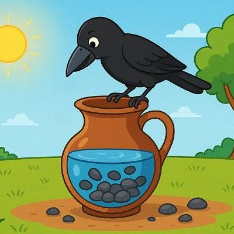

Intelligence and patience solve difficult problems.

It was a hot summer day. A thirsty crow flew over fields and forests looking for water. It searched everywhere but could not find a single drop. The crow became very tired and weak. At last, it saw a clay pot standing under a tree. The crow quickly flew down and looked inside. There was only a little water at the bottom of the pot. The crow tried to drink, but its beak could not reach the water. For a moment, it thought of giving up. Then it noticed many small stones lying nearby. A clever idea came into its mind. The crow picked up one small stone at a time and dropped it into the pot. Slowly, the water level began to rise. The crow kept dropping more stones into the pot. After some time, the water reached the top. The crow happily drank the cool water until its thirst was satisfied. Feeling refreshed, it flew away. The crow understood that every difficult problem has a solution if we think carefully and never lose hope.
Where there is a will, there is a way.